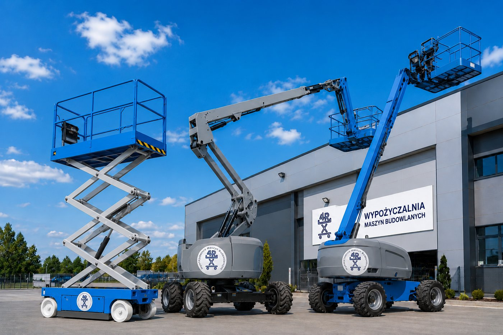

Wynajem podestów ruchomych: jak wybrać odpowiedni sprzęt do pracy na wysokości?

Prace na wysokości wymagają nie tylko odpowiednich umiejętności, ale również właściwie dobranego sprzętu. Wybór odpowiedniego podestu ruchomego ma kluczowe znaczenie dla bezpieczeństwa, efektywności oraz kosztów realizacji zadania. W tym artykule podpowiadamy, na co zwrócić uwagę podczas wynajmu podestu ruchomego i jaki rodzaj urządzenia sprawdzi się w konkretnych zastosowaniach.
Dlaczego warto wynająć podest ruchomy?
Zakup specjalistycznego sprzętu wiąże się z dużymi kosztami oraz koniecznością jego serwisowania i transportu. Dlatego wiele firm budowlanych, instalacyjnych czy przemysłowych decyduje się na wynajem podestów ruchomych.
Korzyści z wynajmu:
- brak kosztów zakupu i utrzymania sprzętu,
- dostęp do nowoczesnych i regularnie serwisowanych maszyn,
- możliwość wyboru sprzętu dopasowanego do konkretnego zadania,
- oszczędność czasu i pieniędzy.
Jaki podest wybrać?
Podesty nożycowe
Podesty nożycowe doskonale sprawdzają się podczas prac wykonywanych pionowo nad miejscem ustawienia maszyny. Są często wykorzystywane podczas:
- prac magazynowych,
- montażu instalacji,
- prac wykończeniowych,
- konserwacji obiektów przemysłowych.
Ich zaletą jest duża platforma robocza oraz stabilność pracy.
Podesty przegubowe
Jeżeli konieczne jest ominięcie przeszkód, najlepszym rozwiązaniem są podesty przegubowe. Dzięki specjalnej konstrukcji ramienia umożliwiają dotarcie do trudno dostępnych miejsc.
Najczęstsze zastosowania:
- prace elewacyjne,
- montaż reklam i banerów,
- konserwacja hal i obiektów przemysłowych,
- przycinanie drzew.
Podesty teleskopowe
Podesty teleskopowe zapewniają bardzo duży zasięg roboczy i są wykorzystywane przy pracach wymagających dotarcia na znaczne wysokości.
Sprawdzają się między innymi przy:
- budowie obiektów przemysłowych,
- pracach konstrukcyjnych,
- montażu elementów na dużych wysokościach.
Na co zwrócić uwagę przy wyborze podestu?
Wysokość robocza
Pierwszym krokiem jest określenie wysokości, na jakiej będą prowadzone prace. Warto pamiętać, że wysokość robocza jest większa od wysokości platformy i uwzględnia zasięg operatora.
Warunki pracy
Znaczenie ma również miejsce wykonywania prac:
- wewnątrz budynków najlepiej sprawdzają się elektryczne podesty nożycowe,
- na zewnątrz warto wybierać maszyny terenowe z napędem spalinowym lub hybrydowym.
Rodzaj podłoża
Nierówny teren, błoto czy grząski grunt wymagają zastosowania maszyn o odpowiednim napędzie i stabilności.
Udźwig platformy
Należy uwzględnić liczbę pracowników oraz ciężar narzędzi i materiałów, które będą znajdować się na platformie.
Bezpieczeństwo przede wszystkim
Praca na wysokości wymaga przestrzegania zasad bezpieczeństwa. Przed rozpoczęciem pracy należy:
- sprawdzić stan techniczny urządzenia,
- zapoznać się z instrukcją obsługi,
- stosować środki ochrony indywidualnej,
- upewnić się, że operator posiada wymagane uprawnienia.
Potrzebujesz pomocy w wyborze sprzętu?
Nie wiesz, jaki podest ruchomy będzie najlepszy do Twojego zadania? Skontaktuj się z naszym zespołem. Pomożemy dobrać odpowiednią maszynę do rodzaju wykonywanych prac, warunków terenowych oraz wymaganej wysokości roboczej.
Oferujemy wynajem nowoczesnych podestów ruchomych dla klientów z Rybnika, Wodzisławia Śląskiego, Raciborza, Żor, Jastrzębia-Zdroju oraz całego województwa śląskiego.